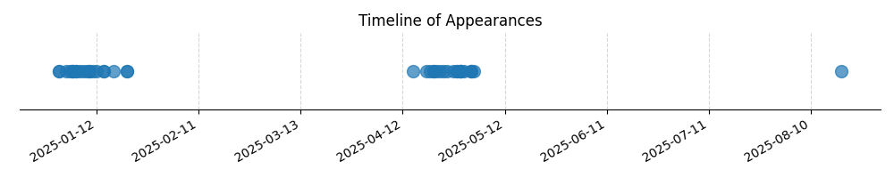

Kategorie: Meteorologie
Inverze teploty je jev, kdy se teplota vzduchu s rostoucí výškou zvyšuje namísto obvyklého poklesu. Tato vrstva působí jako poklička, která brání vertikálnímu pohybu vzduchu. Jakýkoli vzduchový balík, který se snaží stoupnout do vrstvy inverze, se setká s chladnějším okolním vzduchem a má tendenci klesat zpět, čímž se obnovuje původní rovnováha. Stejně tak vzduchový balík, který se snaží klesat, se setká s teplejším okolním vzduchem (pod inverzní vrstvou) a má tendenci stoupat zpět. Tato tendence k návratu do původní polohy je charakteristikou stabilní atmosféry.

| Datum výskytu |
|---|
| 2025-08-19 |
| 2025-05-03 |
| 2025-05-02 |
| 2025-05-02 |
| 2025-05-02 |
| 2025-04-30 |
| 2025-04-29 |
| 2025-04-29 |
| 2025-04-29 |
| 2025-04-29 |
| 2025-04-28 |
| 2025-04-28 |
| 2025-04-27 |
| 2025-04-25 |
| 2025-04-24 |
| 2025-04-23 |
| 2025-04-22 |
| 2025-04-21 |
| 2025-04-21 |
| 2025-04-20 |
| 2025-04-19 |
| 2025-04-15 |
| 2025-01-21 |
| 2025-01-21 |
| 2025-01-17 |
| 2025-01-14 |
| 2025-01-14 |
| 2025-01-12 |
| 2025-01-11 |
| 2025-01-10 |
| 2025-01-10 |
| 2025-01-09 |
| 2025-01-08 |
| 2025-01-07 |
| 2025-01-06 |
| 2025-01-06 |
| 2025-01-05 |
| 2025-01-05 |
| 2025-01-05 |
| 2025-01-04 |
| 2025-01-03 |
| 2025-01-01 |
| 2025-01-01 |